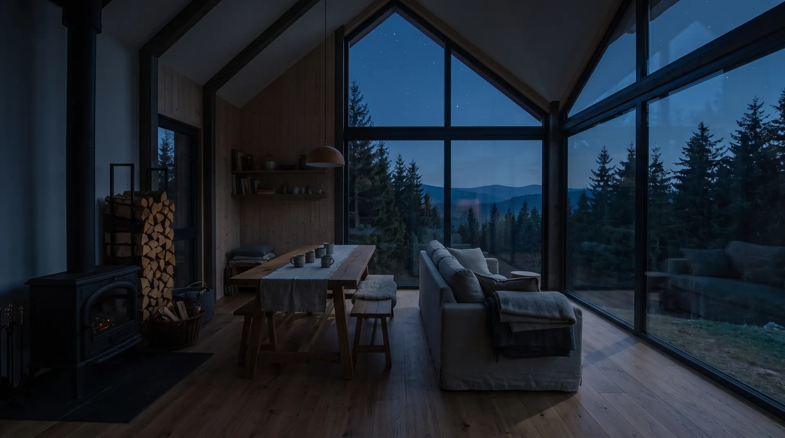
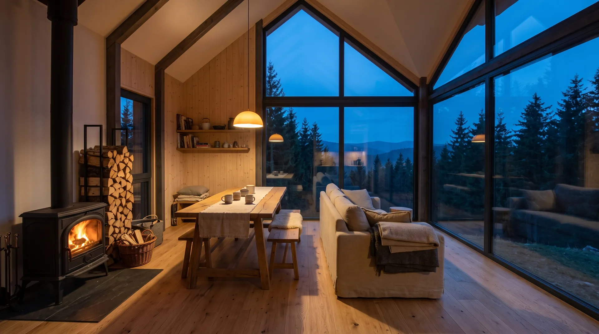
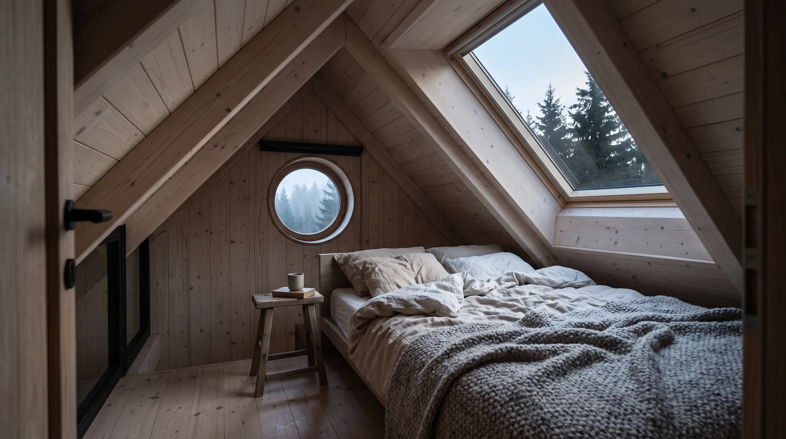
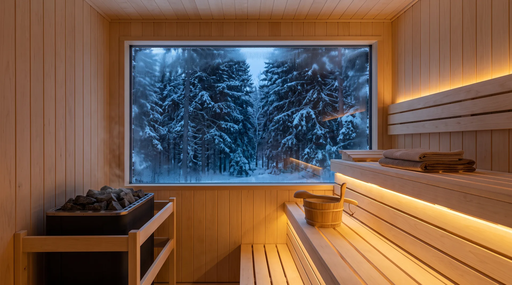

Světnice
Srdce chaty. Tady se snídá, hraje, čte a večer přikládá. Okno přes celou stěnu je obraz, který se mění každou hodinu.
Mlha ještě spí
v údolí.
Káva na prahu, rosa po kotníky a nikde nikdo.
Hřebeny
na dosah ruky.
Stezky začínají hned za chatou. Vrátíte se, až budete chtít.
Večer
zlátnou okna.
Kamna, deka a slunce, které zapadá za Jizeru.
Pak už jen
hvězdy.
Žádné lampy, žádný hluk. Sedm smrků a celé nebe.
Chata
Postavili jsme ji z opáleného modřínu a štít udělali ze skla, aby bylo z postele vidět na hřebeny. Uvnitř kamna, dřevo, len a ticho. Nic víc jsme nepřidali, protože nic víc tady nechybí.
Čtyři lůžka
ve dvou pokojích
Kamna
dřevo je nachystané
Žádní sousedé
na dohled jen hřebeny
Sedm smrků
kolem dokola, odtud to jméno


Světnice
Posvěťte si myší, nebo prstem. Klepnutím rozsvítíte celou.
Pokoje
01 / 03
Srdce chaty. Tady se snídá, hraje, čte a večer přikládá. Okno přes celou stěnu je obraz, který se mění každou hodinu.

Pod šikminou, s oknem přímo nad postelí. Usínáte pod hvězdami, budí Vás světlo, ne budík.

Po celém dni na běžkách nebo v lese. Ze sauny rovnou do sněhu, v létě do sudu s vodou z pramene.
Rok u chaty
Běžky od prahu, sauna, sníh po okna a kamna, která nevyhasnou.
Bledule u potoka, první káva venku a les, který se probouzí.
Borůvky za chatou, koupání v přehradě a noci, kdy se nechce dovnitř.
Houby, mlhy v údolí a dlouhé večery s knížkou u ohně.
Volné termíny
Vyberte příjezd a odjezd. Ozveme se Vám do druhého dne a domluvíme zbytek.